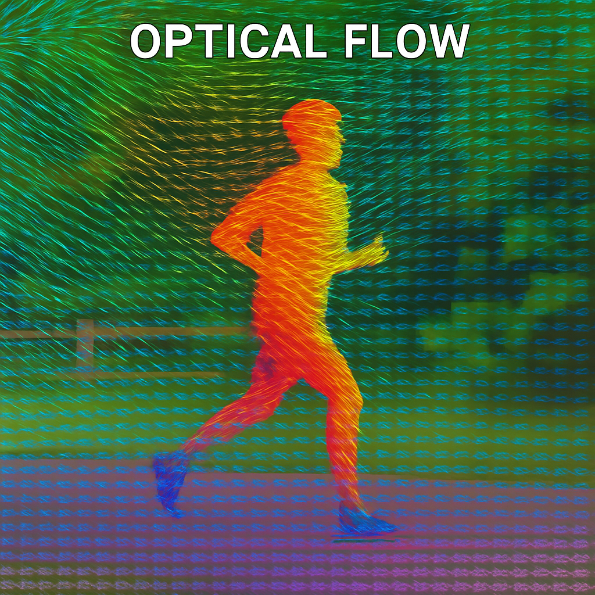

A visual guide to optical flow
Motion between frames, the mathematics behind it, and modern approaches including RAFT and FlowFormer++.
Computational imaging · Computer vision · Machine learning
My work spans visual perception and applied machine learning, from thermal optical flow to scene understanding and large-scale video analysis.
I hold an MS from UC Riverside, where I researched thermal optical flow under Vishwanath Saragadam and Amit Roy-Chowdhury. I hold a BS from PES University.
I also worked as a research fellow at IISc under Anurag Kumar.
At Intel, I worked on scene understanding and a severity ranking system for ADAS alerts.
Through Google Summer of Code, I engineered a large-scale video analysis pipeline.

Motion between frames, the mathematics behind it, and modern approaches including RAFT and FlowFormer++.
Defended my MS thesis on thermal optical flow.
Started as a Graduate Student Researcher at UC Riverside.
Featured on a podcast episode.
Joined the Computational Optics Lab, advised by Vishwanath Saragadam.
Extended abstract accepted at the ICCV BRAVO Workshop.
OCTraN released on arXiv.
OCTraN accepted at the CVPR T4V Workshop.
Started working at Intel.
Received the Best Student Paper Award at the ECML-PKDD MLG Workshop.